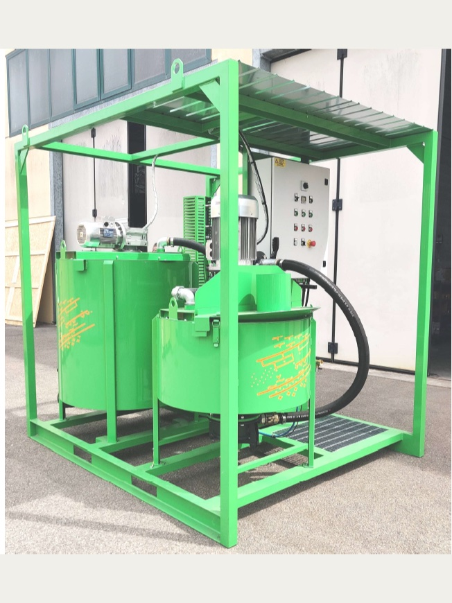

Kolloidal blandning, omrörning och injektering på samma ram
Dai Prà Mixing and Injection Plants
Injekteringsanläggningar från den italienska tillverkaren Dai Prà – turbomixer, omrörare och injekteringspump monterade som en enhet, från kompakta platsaggregat till helautomatiska stationer med datalogger. NASPS levererar, driftsätter och servar dem i Norden.
Begär offertIntroduction
Dai Prà S.r.l. är en italiensk tillverkare med rötter i det tidiga 1900-talet. Verksamheten började med tunnel- och brobyggnad och har under fyra generationer specialiserat sig på maskiner för geotekniska arbeten. NASPS är nordisk distributör och sköter leverans, driftsättning, operatörsutbildning och service.
En anläggning byggs av tre delar. Turbomixern gör ett kolloidalt bruk och klarar cement eller bentonit i blandningar upp till 2,5:1 cement mot vatten utan tillsatsmedel. Omröraren håller det färdiga bruket och håller det homogent med långsam omrörning fram till pumpning. Injekteringspumpen levererar det vid inställt tryck och flöde. För ett stabilt bruk bör omröraren rymma minst dubbelt så mycket som mixern.
Anläggningarna används för självborrande stag och mikropålar, tätning av spont och rörvägg, tunnelinjektering och efterinjektering, jetinjektering, markstabilisering, sprutbetong och geoenergi, samt för injektering av reagenser vid miljösanering.
Drivningen kan vara elektrisk, diesel, hydraulisk eller tryckluft. Eldrivna anläggningar passar arbetsplatser med elektrifieringskrav, och de kompakta aggregaten kan även drivas direkt från borriggens hydraulsystem.
Varje eldriven anläggning kan förses med datalogger. Den registrerar dosering, blandningsförhållande och pumpparametrar per arbetsplats, stoppar injekteringen automatiskt när inställt tryck eller inställd volym nås, och överför data via USB eller SIM så att parametrarna kan följas och justeras från kontoret. Dagsrapporter per plats ger underlag för dokumentation, spårbarhet och fakturering.
Varje anläggning konfigureras för projektet. Berätta vilket tryck, vilket flöde, hur många injektorer och vilken automationsnivå du behöver – datablanketten nedan listar vad vi behöver veta – så sätter vi ihop ett förslag.
Tekniska data
Injekteringspumpar
| Modell | Maxtryck | Max kapacitet |
|---|---|---|
| DE/OL3 | 70 bar | 30 l/min |
| DE/OL 80 | 85 bar | 60 l/min |
| DE/OL 80S | 110 bar | 60 l/min |
| DE/OL 100 | 110 bar | 100 l/min |
| DE/OL 130 | 85 bar | 130 l/min |
| DE/OL 130S | 85 bar | 215 l/min |
Mixrar och omrörare
| Enhet | Tankvolymer | Drivning |
|---|---|---|
| Turbomixer | 150 · 300 · 500 · 1000 l | El, diesel, hydraulik eller tryckluft |
| Omrörare | 300 · 500 · 750 · 1000 l | El, diesel, hydraulik eller tryckluft |
Kompaktaggregat
| Modell | Flöde | Maxtryck |
|---|---|---|
| Minimix 40 | 0–60 l/min | 0–50 bar |
| Minimix 50 | 0–95 l/min | 0–120 bar |
Färdiga anläggningar
| Del | DE/OL 80 – T300 – AG500 | DE/OL 100 – T300 – AG750 |
|---|---|---|
| Injekteringspump | 4 kW, 80 bar, 60 l/min | 9.2 kW, 110 bar, 100 l/min |
| Turbomixer | 300 l, 5.5 kW, 700 l/min | 300 l, 5.5 kW, 700 l/min |
| Omrörare | 500 l, 1.1 kW, 60 rpm | 750 l, 1.5 kW, 60 rpm |
| Mått | 275 × 112 × h225 cm | 240 × 185 × h230 cm |
| Vikt | 950 kg | 1450 kg |
| Matning | 32 A | 32 A |
Automation
| Nivå | Skärm | Omfattar |
|---|---|---|
| RemoteIn | 10 inch | Injektering: uppsprickningstryck, maxtryck, volym, GIN-stopp och konstant flöde. Trycksensor och flödesmätare ingår. |
| RemoteMes | 10 inch | Blandning: tre recept vägda på lastceller, kompressor, pneumatiska ventiler och vattenpåfyllningspump. Ersätter det separata vägningssystemet. |
| RemoteTot | 16 inch | Bägge ovanstående i ett system. |
Uppgifterna är riktvärden och bekräftas för varje konfiguration. Anläggningar med automatisk blandning (RemoteMes) eller full automation (RemoteTot) kräver mer plats, ungefär 200 × 200 cm, och ytan stäms av mot vald uppsättning.
Bland tillbehören finns spolpump med lans och slangvinda, vattenpåfyllningspump, vägningssystem på lastceller, kompressor med pneumatiska ventiler, slangvindor, sprutbetongmunstycken och grävmaskinsfästen, packers samt silo- och skruvmatning.
Dokument
Allt här öppnas eller laddas ner direkt. Datablanketten är snabbaste vägen till ett förslag.
- Datablankett för blandnings- och injekteringssystemFyll i tryck, flöde, antal injektorer och automationsnivå och skicka till oss.
- Datablankett, kalkylbladsversionSamma blankett som kalkylblad, om du hellre fyller i den på skärmen.
- Produktblad, DE/OL 80 och DE/OL 100Bilder och specifikationer för de två färdiga anläggningarna, tillbehör och teknik.
- Dai Prà företagspresentationTillverkarens egen presentation, med kompetensområden och referensprojekt.
- MiljösaneringsteknologierDai Prà om injektering av förorenad mark och regenerering av dräneringsbrunnar, på engelska och svenska.
DE/OL 80-anläggning med 300 l turbomixer och 500 l omrörare på lyftram

Get in Touch with NASPS
Collaboration, Work Enquires or Just Say Hello.
Drop us a line